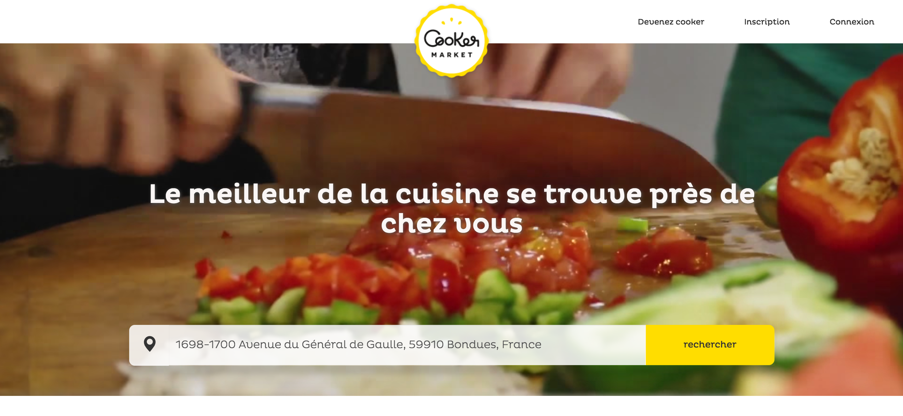
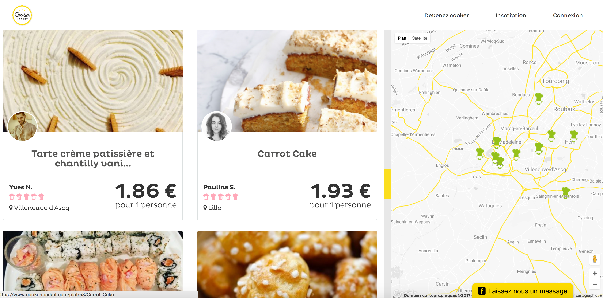
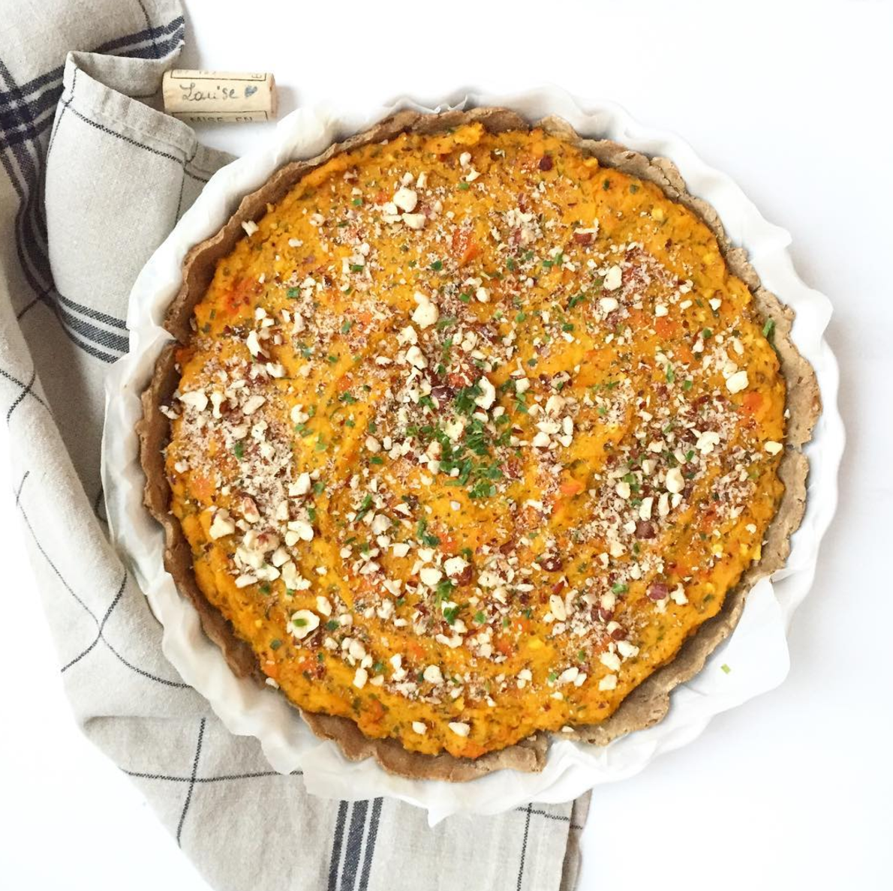

Quelques mots sur ma vie ? Après 5 années d'études dans le textile et la mode, le marketing digital et réseaux sociaux, j'ai co-fondé ma start-up Cooker Market il y a deux ans. Depuis début 2017, nouveau souffle avec la formation Le Wagon pour apprendre à coder ! En avant vers de nouvelles aventures ... !
Cooker Market c'était une plateforme de mise en relation entre particuliers qui pouvaient proposer ou commander des plats fait-maison près de chez eux.
 Super sportive 🏄♀️ et j'adore la bouffe (mais la bonne bouffe 🥕) !
Clique sur l'image pour voir ma page Instagram de cuisine !